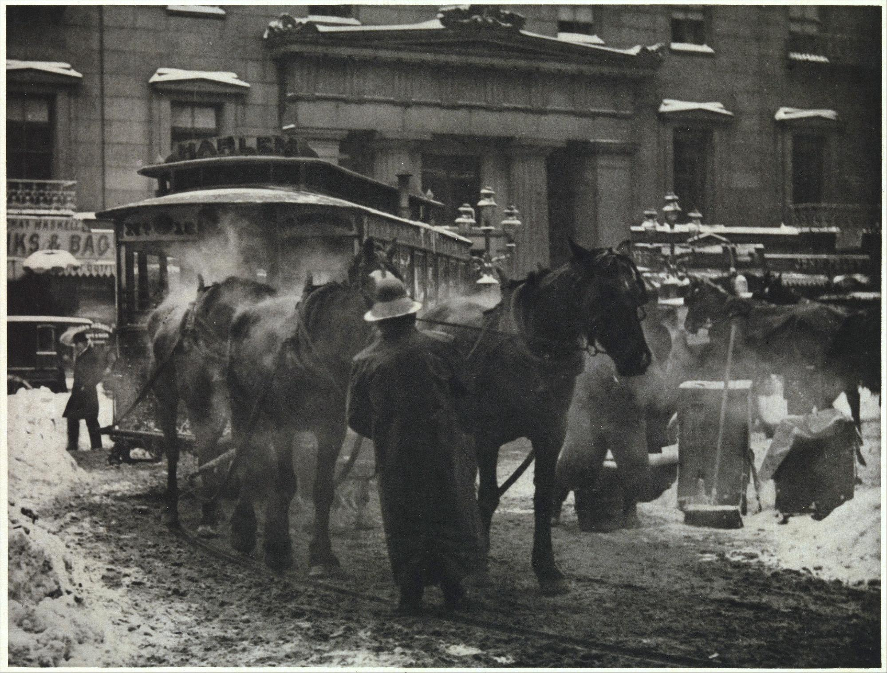
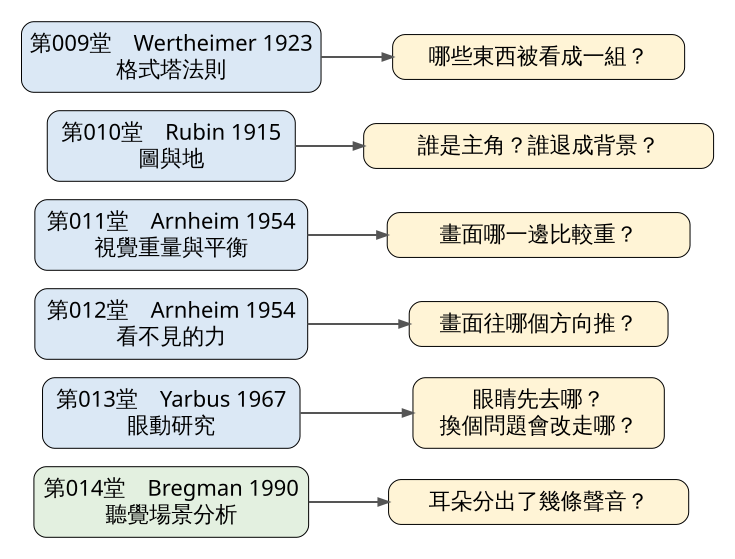
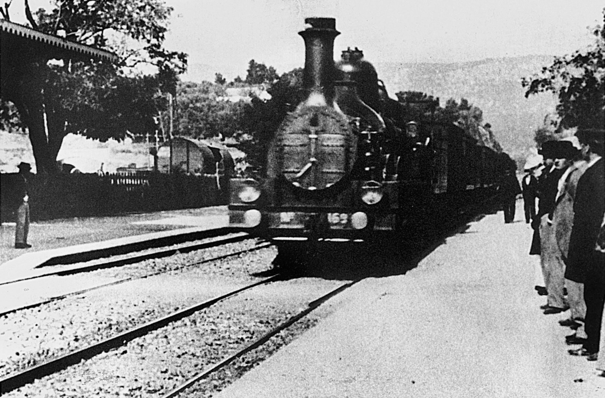

單元二的六堂課，各自留下一個可以帶上路的問題：哪些東西被看成一組、誰是主角、哪一邊比較重、畫面往哪裡推、眼睛先去哪、耳朵分出幾條聲音。今天把六個問題放在同一張照片上試一遍：Alfred Stieglitz 1893 年在紐約雪地裡拍的〈The Terminal〉。對照的是 Lumière 兄弟那部「嚇跑觀眾」的火車進站影片，以及那則傳說怎麼被拆穿。練習 30 分鐘，在你自己的通勤路上找出五條 Wertheimer 的分群法則，再加上圖地、重量、方向、視線與聲音。
史料（Getty 典藏說明，經 Google Arts & Culture；Krannert Art Museum 典藏說明，Kuechler 2008） Stieglitz 在德國待了多年，剛回到紐約時很不適應。依 Krannert 美術館引述他後來的回憶，他覺得眼前的紐約已經不是他記得的那座城，常常一個人在街上悶悶地走。Getty 的說明引他自己的話：1893 到 1895 年間，他常帶著「hand camera」走在下城的街上。
Getty 引的版本說，那是極冷的一天，地上積著雪，他走到舊郵局附近一條馬拉街車路線的終點站；Krannert 引的版本則說是一個暴風雪的夜晚。一名穿橡膠雨衣的車伕正在替冒著白氣的拉車馬餵水。Stieglitz 回憶，那一刻他想：至少這裡還有「the human touch」，心情因此好了起來。他按下快門，這張照片就是〈The Terminal〉（見圖 1）。1911 年 10 月，他把它刊在自己編的《Camera Work》上。

圖 1｜Alfred Stieglitz，〈The Terminal〉，1893 年攝（Met 藏本 1913 年以前印製），The Metropolitan Museum of Art 藏（49.55.18）。來源：Alfred Stieglitz，The Terminal，1893。授權：Public domain（美國 1931 年前出版；Met 開放典藏 CC0），來源頁面
關於這張照片還流傳著一段軼事：Getty 的說明寫道，有一種說法認為 Stieglitz 看著車伕照料馬匹，決定也要在美國照料藝術，幾年後便開始辦展覽、開畫廊。這是事後回頭替人生找起點的說法，沒有當時的文獻可以證明那一刻他真的這樣想。拍攝年份也有出入：多數典藏標 1893 年，Met 藏本的 Commons 檔案頁則同時列出 1893 與 1892。
先把前六堂收成六副鏡片（見圖 2）。每一副都對應一位研究者、一本書或一篇論文，也都有它的限度。

圖 2｜單元二六堂課各自留下的一個問題。來源：本課程依 Wertheimer 1923、Rubin 1915（依 Pind 2012）、Arnheim《Art and Visual Perception》1954、Yarbus《Eye Movements and Vision》1967（依 Tatler 等 2010）、Bregman《Auditory Scene Analysis》1990（依 McAdams 2023）繪製。
實證研究｜分群：Wertheimer，〈Untersuchungen zur Lehre von der Gestalt II〉，《Psychologische Forschung》第 4 卷，1923（依 Ellis 1938 英譯本） Wertheimer 從一排點開始：點的間隔交替為 3 公釐與 12 公釐時，人會自動把靠近的兩點看成一對，很難反過來配。這是接近因素。他接著依序列出相似、共同命運（一起移動的東西成組）、方向（順著同一條線延伸的成組，後人多稱良好連續）、封閉，以及過去經驗。Wagemans 等人 2012 年在《Psychological Bulletin》的百年回顧指出，這些法則都帶著「其他條件相同」的前提，兩條法則可以互相拉扯，有時封閉會壓過連續。
實證研究｜圖與地：Edgar Rubin，《Synsoplevede Figurer》，1915（依 Pind 2012） Rubin 在哥本哈根大學的博士論文裡描述：被看成「圖」的那一塊有形狀、像一個東西；「地」沒有明確形狀，像材料，而且看起來在圖的後面繼續延伸。兩塊區域之間的輪廓線只屬於圖。
經典理論｜重量與力：Rudolf Arnheim，《Art and Visual Perception》，1954 Arnheim 第一章用一個放在方框裡的黑色圓盤開場：圓盤離開中心，看起來就有被拉、被推的張力。他主張畫面是一個力場，物件的大小、位置、顏色與形狀都會改變它的「重量」，形狀與動態的方向會產生推力（依二手文獻：Hübner 與 Fillinger 2016 的整理）。這是他的主張，Arnheim 自己也承認這些因素大多有待驗證。McManus、Stöver 與 Kim 2011 年把它量化測試，在控制得較嚴的實驗裡沒有找到「平衡的畫面比較受偏好」的證據。
實證研究｜視線：Alfred Yarbus，《Eye Movements and Vision》，英譯本 1967（依 Tatler 等 2010） Yarbus 讓一位受試者看 Repin 的畫〈意外歸來〉，換七種問題各看 3 分鐘，眼睛停留的位置隨問題明顯改變。原始紀錄只有一人；DeAngelus 與 Pelz 2009 年用多位受試者重做，問題改變視線的效果仍然成立。
經典理論｜聲音分群：Albert Bregman，《Auditory Scene Analysis》，MIT Press，1990（依 McAdams 2023） Bregman 主張大腦要把耳朵收到的混合聲音分回一條條「聽覺串流」；音高接近、時間挨近的音容易串成一條，旋律與節奏只有在同一條串流裡才容易聽出來。
六副鏡片裡，Wertheimer、Rubin、Yarbus 與 Bregman 背後都有一系列實驗；Arnheim 的重量與力是一位藝術心理學家的系統觀察，至今仍有爭議。練習時把這個差別記在心上。
史料｜Alfred Stieglitz，〈The Terminal〉，1893，凹版照相（Getty 藏本 12.1 × 15.9 公分） 把圖 1 放大，一副一副鏡片看下去。
圖與地 畫面裡最先跳出來的是深色的東西：中間背對我們的車伕，他右邊那匹黑馬，左邊兩匹被白氣罩住的馬。它們背後是一棟有柱子的石造建築，在霧氣裡發灰，輪廓不清。用 Rubin 的描述，這棟樓成了「地」：它沒有被看成一個完整的形，好像在人和馬後面一直延伸出去。地上的雪也一樣，亮、平、沒有形狀，把深色的馬腿和車伕的下襬托出來。
分群 左邊兩匹馬和車廂連成一團，白氣把它們包在一起，這是靠接近與一團相同的灰調。畫面右側背景裡還有幾匹馬與箱子，彼此擠在一起，自成另一組。車伕夾在兩組之間，黑色的雨衣和他右邊那匹黑馬顏色相近，眼睛很容易把一人一馬看成一對。腳下有兩道彎曲的軌道從左下角劃向右邊，順著 Wertheimer 說的方向因素，視線會沿著它滑過整個前景。
重量 照 Arnheim 的說法，其他條件相同時，大的比較重，離中心越遠的越重。這張照片面積最大、對比最強的一塊是車伕和他右邊的黑馬，幾乎就在中央，像翹翹板的支點。左上方的車廂頂寫著「HARLEM」，體積大，輪廓卻被白氣沖淡。左邊遠處一個撐傘的小人站在暗色馬車旁，個子很小，位置卻靠近邊緣；右邊背景的馬群與箱子也擠在邊上。左下角與右下角各堆著一塊亮白的雪。你可以用手指遮住左邊那個撐傘的人，看看左半邊會不會變輕。
方向 黑馬的頭朝右，車伕的身體也朝右，兩股方向疊在一起，畫面有一股往右推的力。白氣往上、往左散開，和這股推力相反。Stieglitz 讓車伕背對鏡頭，我們看不到他的臉，只看得到他在做的事。
視線 Yarbus 的結果提醒我們：看同一張圖，問題換了，眼睛走的路就換了。這張照片沒有眼動數據，你可以自己試。先問「這天有多冷？」，再問「這是哪一條路線的車？」。前一題大概會把你帶去馬身上的白氣與地上的雪，後一題會把你帶去車頂的招牌。這是給你做的實驗，不是已知的結果。
聲音 照片沒有聲音。Bregman 的鏡片在這裡只能反過來用：試著替這個畫面配音，你會聽到幾條串流？馬蹄、車輪、車伕的吆喝、遠處的人聲。你能想像出幾條，多半取決於畫面裡分得出幾群會發聲的東西。
史料｜Louis Lumière，《L'Arrivée d'un train en gare de La Ciotat》（火車進站），約 50 秒 這部片常被說成 1895 年 12 月 28 日在巴黎大咖啡館（Grand Café）首映時，觀眾以為火車要衝出銀幕，嚇得逃出放映廳。這個故事已被反駁。Martin Loiperdinger 2004 年在《The Moving Image》第 4 卷第 1 期發表〈Lumière's Arrival of the Train: Cinema's Founding Myth〉，逐一查核：巴黎警察局的檔案沒有相關紀錄，當時的報紙找不到任何報導，Lumière 兄弟已出版的書信也沒提過。12 月 28 日那場首映的片單裡甚至沒有火車進站。他考證出今天通行的那個版本，是 Louis Lumière 1897 年夏天才拍的。

圖 3｜《L'Arrivée d'un train en gare de La Ciotat》的一格畫面。Commons 標為 1895 年；依 Loiperdinger 2004，通行版本攝於 1897 年。來源：Auguste and Louis Lumière，L'Arrivée d'un train en gare de La Ciotat。授權：Public domain（Commons 標示 PD-US），來源頁面
Loiperdinger 也從放映條件反推：Lumière 放映機投出的畫面只有約 8 英尺寬，影像劇烈閃爍，片子是黑白、無聲，咔噠作響的放映機就擺在觀眾身後。在這種條件下要把銀幕錯當成真的火車，不太可能。
可是火車迎面而來的畫面，確實會讓人有一種奇怪的感覺。Loiperdinger 引用 Arnheim 1932 年的《Film als Kunst》（英譯《Film as Art》，1957）來解釋：火車越靠近，深色的一團在銀幕上就往四面八方脹開，這股「膨脹」的動力疊在火車本身的前進上（依二手文獻：Loiperdinger 2004 引 Arnheim）。結果是，一列其實正在減速進站的火車，看起來像在加速。這和第 012 堂談的「看不見的力」是同一套想法，只是從靜止的畫面搬到會動的畫面。
拿單元二其他鏡片看這一格（見圖 3）：兩條鐵軌從左下斜向畫面中央，是 Wertheimer 的方向因素，把眼睛直接送到火車頭；右邊月台上一排等車的人靠得很近、穿著相似的深色衣服，被看成一組。Loiperdinger 指出，大家只記得開頭幾秒的火車頭，片子大半時間其實在拍月台上上下下的人群。火車停下後，下車的人和要上車的人各朝不同方向走，兩群人在鏡頭前交錯，這正是共同命運在分群：同方向移動的人，眼睛自動把他們歸成一夥。
誤解一：格式塔法則是固定公式，看到就一定會那樣分。實證研究 Wertheimer 的法則都有「其他條件相同」的前提。Wagemans 等人 2012 的回顧整理了接近與相似互相競爭的實驗，兩者的效果可以相加、抵消。月台上兩個靠得很近、衣服顏色完全不同的人，你可能看成一組，也可能分開。
誤解二：Arnheim 的平衡理論已被實驗證實。實證研究 McManus 等人 2011 年的五個實驗裡，受試者自己裁切照片時，重心確實比隨機裁切更接近畫面的軸線；可是在把重心移上、移下軸線的對照實驗中，受試者沒有偏好「平衡」的版本。Arnheim 的觀察仍然好用，只是要當作看圖的工具，別當成定律。
誤解三：Lumière 的觀眾因為沒看過電影，分不清銀幕與現實。史料 這是火車恐慌傳說背後的假設。Loiperdinger 指出，大咖啡館地下室賣的就是「會動的照片」，每半小時一場、場場爆滿，真有人奪門而逃，在狹窄的出口一定會出事、留下紀錄。人可能被畫面嚇一跳，Tom Gunning 把這種反應比作坐雲霄飛車的刺激（依二手文獻：Loiperdinger 2004 引 Gunning）；那和真的以為火車要衝進來，是兩件事。
誤解四：〈The Terminal〉是隨手抓拍。史料 Getty 的說明引他自己的話：那幾年他常常帶著手持相機上街。Krannert 的說明特別提到，這張照片顯示他在惡劣天候下操作手持相機的功夫。它是一次散步裡拍下的，但拍的人早就帶著相機、帶著要拍街頭的打算出門。
單元練習，總長 30 分鐘。準備手機與一張紙。走在路上時先停下來再拍，不要拍陌生人的臉，車站或店家禁止拍照的地方就只用紙筆記。
圖 4｜五條分群法則與通勤路上可以找的例子（例子為練習提示）。來源：本課程依 Wertheimer 1923（Ellis 1938 英譯）繪製。
看（5 分鐘） 出門後選一個停留點：公車站牌、捷運月台、等紅燈的路口。站定，閉眼 30 秒，數你聽到幾條聲音；睜眼，用紙寫下你最先注意到的三樣東西。再問自己一個問題，例如「這裡現在多擠？」，看看眼睛會不會改去別的地方，把新的三樣也寫下來。
做（20 分鐘） 沿著通勤路線，完成下面五件事。
回顧（5 分鐘）
來源 | 來源類型 | 查核日期 |
J. Paul Getty Museum，〈The Terminal〉典藏說明（經 Google Arts & Culture；Stieglitz 回憶、尺寸 12.1 × 15.9 公分、軼事） | 史料 | 2026-11-11 |
史料 | 2026-11-11 | |
Wikipedia：The Terminal (photograph)（用於交叉比對拍攝地點與年份，引 Met、Getty、NGA、AIC 典藏頁） | 史料（二手彙整，僅作交叉比對） | 2026-11-11 |
圖 1 授權頁面：Wikimedia Commons，The Terminal MET DP232977 (color corrected).jpg | 圖片授權（Public domain／CC0） | 2026-11-11 |
史料；實證研究（史料考證） | 2026-11-11 | |
史料 | 2026-11-11 | |
圖 3 授權頁面：Wikimedia Commons，L'Arrivée d'un train en gare de La Ciotat.jpg | 圖片授權（Public domain，PD-US） | 2026-11-11 |
實證研究（原典英譯） | 2026-11-11 | |
實證研究（回顧） | 2026-11-11 | |
Jörgen L. Pind，〈Looking back: Figure and ground at 100〉，The Psychologist（BPS），2012（Rubin 1915 論文） | 史料；實證研究（依二手文獻） | 2026-11-11 |
經典理論（依二手文獻）；實證研究 | 2026-11-11 | |
經典理論（依二手文獻）；實證研究 | 2026-11-11 | |
實證研究 | 2026-11-11 | |
經典理論（依二手文獻） | 2026-11-11 |
延伸閱讀：Loiperdinger 的論文第 102 頁以後逐段拆解火車進站的畫面，從火車頭一路講到月台上的人群，可以配著影片一格一格看。Wertheimer 1923 的英譯本前三節只有幾頁，點陣例子用紙筆就能自己畫出來。
.jpg){kind=link}